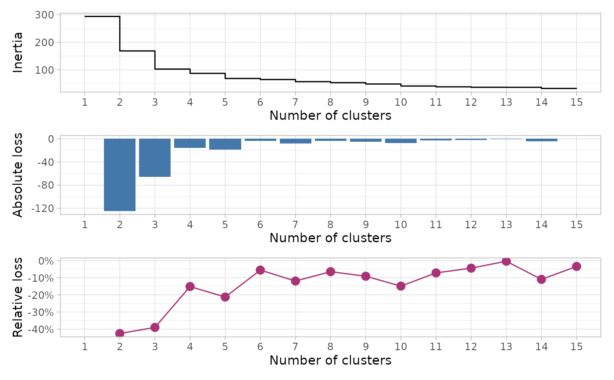

Plot inertia, absolute loss and relative loss from a classification tree
Source:R/plot_inertia_from_tree.R
plot_inertia_from_tree.RdPlot inertia, absolute loss and relative loss from a classification tree
Arguments
- tree
A dendrogram, i.e. an stats::hclust object, an FactoMineR::HCPC object or an object that can be converted to an stats::hclust object with
stats::as.hclust().- k_max
Maximum number of clusters to return / plot.
Examples
hc <- hclust(dist(USArrests))
get_inertia_from_tree(hc)
#> # A tibble: 15 × 4
#> k inertia absolute_loss relative_loss
#> <int> <dbl> <dbl> <dbl>
#> 1 1 294. NA NA
#> 2 2 169. -125. -0.426
#> 3 3 103. -65.7 -0.390
#> 4 4 87.3 -15.5 -0.151
#> 5 5 68.8 -18.6 -0.213
#> 6 6 65.0 -3.77 -0.0548
#> 7 7 57.3 -7.72 -0.119
#> 8 8 53.6 -3.68 -0.0642
#> 9 9 48.7 -4.87 -0.0908
#> 10 10 41.5 -7.24 -0.149
#> 11 11 38.5 -2.96 -0.0713
#> 12 12 36.8 -1.68 -0.0436
#> 13 13 36.7 -0.113 -0.00307
#> 14 14 32.7 -4.02 -0.109
#> 15 15 31.6 -1.10 -0.0336
plot_inertia_from_tree(hc)
